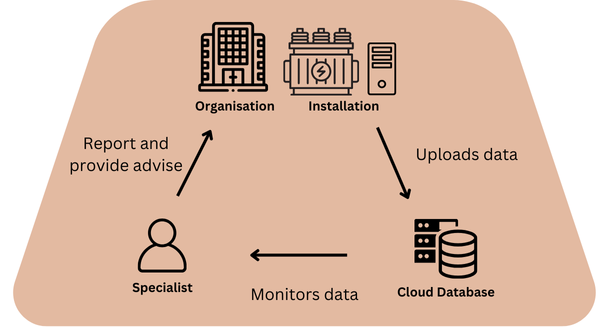

The PDzen Partial Discharge (PD) Monitoring System is an advanced solution designed for continuous, real-time monitoring of high-voltage (HV) and extra-high-voltage (EHV) electrical assets such as transformers, HV cables, air-insulated switchgear (AIS), and gas-insulated switchgear (GIS). The system comprises an industrial-grade PC with a Windows operating system and a data acquisition unit featuring one synchronization channel and three measurement channels, with a minimum setup of four channels. The system is fully scalable, allowing for an unlimited number of additional channels as needed.
The system is capable of capturing and processing high-frequency noise and PD signals detected by strategically installed PD sensors. It employs a combination of capacitive, inductive, and resistive couplers to ensure accurate electrical measurement and detailed signal analysis. The PD monitoring system is highly sensitive, capable of detecting PD signals across a wide frequency range—up to 60 MHz—and signals as low as 20 pC.
The monitoring system operates as a standalone unit within a localized control cubicle, where collected data is securely stored on an SSD drive. It supports 24/7 online monitoring, ensuring real-time data collection, trending, and predictive maintenance insights. All data is readily available for download and in-depth evaluation. Additionally, the system supports remote diagnostics, allowing experts to assess PD activity as it emerges.
The system distinguishes between normal and abnormal PD signals. Processed abnormal data is automatically transmitted to a cloud server via a 4G modem/router, ensuring secure storage and remote access. Expert analysts interpret and evaluate the processed data, providing clients with detailed insights into the condition of their electrical assets, including cables, switchgear, and transformers.
PDzen empowers utilities and industries with cutting-edge PD monitoring to ensure the safety, reliability, and efficiency of critical electrical infrastructure. Stay ahead of potential failures with real-time diagnostics and predictive maintenance.
📩 Contact us today to learn more!